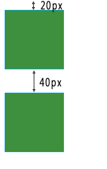
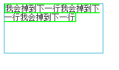
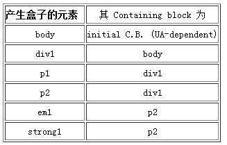
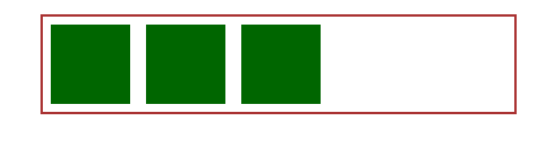
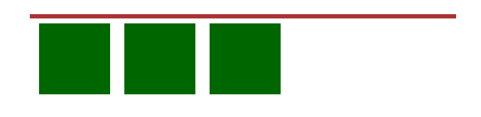
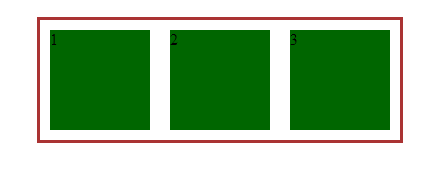

写这篇文章的起因是源于这篇文章：谈谈面试与面试题 中关于position的讨论，文中一开始就说的这句话：
面试的时候问个css的position属性能刷掉一半的人这是啥情况……
其实这问题我本来打算的是可以顺着一路扯到normal flow、containing block、bfc、margin collapse，base line，writing mode，bidi，这样一路问下去的，奈何第一个问题（亲我真的只问了position有哪些取值和行为啊）就悲剧了……
说到position，那么稍微对css有所了解的必然能马上说出它的四个属性值：static 、relative、absolute、fixed。但是更深一步去讨论，牵扯出诸如上文提到的normal flow、containing block、bfc、margin collapse，base line，writing mode，bidi，又有多少人能很好的回答完整呢，所以我想在此做一个自己的总结归纳。
1.normal flow
normal flow(正常流):正常流是默认的定位方式。任何没有具体指定{position:absolute}或者{position:fixed}属性以及没有被浮动的元素都将默认获得此属性。
在这种方式里，块级元素在它们的包含块里一个一个垂直延伸，行内元素在它们的包含块里从左至右的水平排布。
值得注意的是，在正常流里垂直边距（vertical margin）是重叠的。也就是说，上下两个块级盒之间的边距由它们之中边距较大的元素决定，而不是他们的和！
1 <style>
2 div
3 {
4 width: 100px;
5 height: 100px;
6 border: 1px solid #00A4CC;
7 background-color: #3e8f3e;
8 }
9 .div1
10 {
11 margin:20px 0;
12 }
13 .div2
14 {
15 margin:40px 0;
16 }
17 </style>
18 </head>
19
20 <body>
21 <div class="div1"></div>
22 <div class="div2"></div>
23 </body>
效果显示如下：

div1和div2的垂直距离由大的margin决定，也就是div2的40px而不是二者之和60px。
其次，行内元素是会被折断的，当宽度受到限制的时候，它会自动移动到下一行。这可能会产生一些难看的效果如果行内块有边框的话。看下面的效果：
1 <head>
2 <style>
3 div
4 {
5 width: 200px;
6 height: 100px;
7 border: 1px solid #00A4CC;
8 }
9
10 span
11 {
12 border: 2px solid #00ff00;
13 }
14 </style>
15 </head>
16
17 <body>
18 <div>
19 <span> 我会掉到下一行我会掉到下一行我会掉到下一行</span>
20 </div>
21 </body>
效果显示如下：

2.containing block
containing block（包含块）：是视觉格式化模型的一个重要概念，它与框模型类似，也可以理解为一个矩形，而这个矩形的作用是为它里面包含的元素提供一个参考，元素的尺寸和位置往往是由该元素所在的包含块决定的。也就是说一个元素盒子的位置和大小有时是通过相对于一个特定的长方形来计算的，这个长方形就被称之为元素的 containing block。
一个元素的containing block按照以下方式定义：
-
用户代理（比如浏览器）选择根元素作为 containing block（称之为初始 containing block）。
-
对于其它元素，除非元素使用的是绝对位置，containing block 由最近的块级祖先元素盒子的内容边界组成。
-
如果元素有属性 'position:fixed'，containing block 由视口建立。
-
如果元素有属性 'position:absolute'，containing block 由最近的 position 不是 static 的祖先建立，按下面的步骤：
-
如果祖先是块级元素，containing block 由祖先的 padding edge 形成。
-
如果祖先是内联元素，containing block 取决于祖先的 direction 属性。
-
如果 direction 是 ltr（左到右），祖先产生的第一个盒子的上、左内容边界是 containing block 的上方和左方，祖先的最后一个盒子的下、右内容边界是 containing block 的下方和右方。
-
如果 direction 是 rtl（右到左），祖先产生的第一个盒子的上、右内容边界是 containing block 的上方和右方，祖先的最后一个盒子的下、左内容边界是 containing block 的下方和左方。
-
-
5.如果没有祖先，根元素盒子的内容边界确定为 containing block。
名词解释：
视口：通过解析文档，连续媒体（比如屏幕就是连续媒体，而打印机则是基于页的媒体）给用户产生一个视口（一个窗口或其它在屏幕上显示的区域）。
根元素：源文件中，每一个元素都有一个父元素，只有一个例外，它就是根元素。
padding edge：请参见下图：

举个板栗：
1 <html>
2 <head>
3 <title>Illustration of containing blocks</title>
4 </head>
5 <body id="body">
6 <div id="div1">
7 <p id="p1">This is text in the first paragraph...</P>
8 <p id="p2">This is text
9 <em id="em1"> in the
10 <strong id="strong1">second
11 </strong> paragraph.
12 </em>
13 </p>
14 </div>
15 </body>
16 </html>
那么，在没有指定任何position的情况下，上方代码的containng block确定方式为：

如果我们设置div1的position为：
1 #div1 { position: absolute;}
此时，div1 的 containing block 就不再是 body，它变成了初始 containing block（因为这里还没有具有 position 的祖先盒子）。
3.BFC
BFC（Block Formatting Context 块格式化上下文）：是W3C CSS 2.1 规范中的一个概念，在CSS3中被修改为flow root。格式化则表明了在这个环境中，元素处于此环境中应当被初始化，即元素在此环境中应当如何布局等。元素如果创建了BF么BFC决定了如何对其内容进行定位，以及它与其他元素的关系和相互作用。
通俗理解：首先BFC是一个名词，是一个独立的布局环境，我们可以理解为一个箱子（实际上是看不见摸不着的），箱子里面物品的摆放是不受外界的影响的。转换为BFC的理解则是：BFC中的元素的布局是不受外界的影响（我们往往利用这个特性来消除浮动元素对其非浮动的兄弟元素和其子元素带来的影响。）并且在一个BFC中，块盒与行盒（行盒由一行中所有的内联元素所组成）都会垂直的沿着其父元素的边框排列。
创建了BFC的元素会按照如下的方式对其子元素进行排列：
- 在BFC中，盒子从顶端开始垂直地一个接一个地排列，两个盒子之间的垂直的间隙是由他们的margin 值所决定的。在一个BFC中，两个相邻的块级盒子的垂直外边距会产生折叠。即是在BFC中相邻的块级元素的垂直边距会折叠（collapse）。
- 在BFC中，每一个盒子的左外边缘（margin-left）会触碰到容器的左边缘(border-left)（对于从右到左的格式来说，则触碰到右边缘）， 即使存在浮动也是如此（尽管一个子元素的内容区域会由于浮动而压缩），除非这个子元素也创建了一个新的BFC，如它自身也是一个浮动。
名词解释：
边距折叠：在CSS当中，相邻的两个盒子（可能是兄弟关系也可能是祖先关系）的外边距可以结合成一个单独的外边距。这种合并外边距的方式被称为折叠，并且因而所结合成的外边距称为折叠外边距。
折叠的结果：
- 两个相邻的外边距都是正数时，折叠结果是它们两者之间较大的值。
- 两个相邻的外边距都是负数时，折叠结果是两者绝对值的较大值。
- 两个外边距一正一负时，折叠结果是两者的相加的和。
产生折叠的必备条件：margin必须是邻接的,且需要满足如下条件：
- 必须是处于常规文档流（非float和绝对定位）的块级盒子,并且处于同一个BFC当中。
- 没有线盒，没有空隙（clearance），没有padding和border将他们分隔开
- 都属于垂直方向上相邻的外边距，可以是下面任意一种情况
- 元素的margin-top与其第一个常规文档流的子元素的margin-top
- 元素的margin-bottom与其下一个常规文档流的兄弟元素的margin-top
- height为auto的元素的margin-bottom与其最后一个常规文档流的子元素的margin-bottom
- 高度为0并且最小高度也为0，不包含常规文档流的子元素，并且自身没有建立新的BFC的元素的margin-top和margin-bottom
那么，什么情况下会创建BFC：
- 浮动元素（float: left | right）
- 绝对定位元素（position: absolute | fixed）
- 行内块元素（display: inline-block）
- 表格的单元格（display: table-cells，TD、TH）
- 表格的标题（display: table-captions，CAPTION）
- 'overflow' 特性不为 visible 的元素
- 表格元素创建的 "匿名框"
值得注意的是，"display:table" 本身并不产生 "block formatting contexts"。但是，它可以产生匿名框， 其中包含 "display:table-cell" 的框会产生块格式化上下文。
总之，对于 "display:table" 的元素，产生块格式化上下文的是匿名框而不是 "display:table"。
最后，是这些元素创建了块格式化上下文，它们本身不是块格式化上下文。
BFC的运用：消除浮动与多栏布局。
1.自适应两栏布局
1 <style>
2 body {
3 position: relative;
4 }
5
6 .aside {
7 width: 100px;
8 height: 150px;
9 float: left;
10 background: #f66;
11 }
12
13 .main {
14 height: 200px;
15 background: #fcc;
16 }
17 </style>
18 <body>
19 <div class="aside"></div>
20 <div class="main"></div>
21 </body>
效果如下：

根据BFC的规则：
每一个盒子的左外边缘（margin-left）会触碰到容器的左边缘(border-left)（对于从右到左的格式来说，则触碰到右边缘）
所以，虽然存在浮动的元素aslide，但main的左边依然会与包含块的左边相接触。
因此，我们可以根据：
BFC的区域不会与float box重叠。
来通过触发main生成BFC，实现自适应两栏布局。
1 .main { 2 overflow: hidden; 3 }
当触发main生成BFC后，这个新的BFC不会与浮动的aside重叠。因此会根据包含块的宽度，和aside的宽度，自动变窄。效果如下：

2.清除内部浮动
1 <head> 2 <title>Clear float</title> 3 <style> 4 .container{ 5 margin: 30px auto; 6 width:600px; 7 height: 300px; 8 } 9 .wrapper{ 10 border:solid 3px #a33; 11 } 12 .main{ 13 width: 100px; 14 height: 100px; 15 background-color: #060; 16 margin: 10px; 17 float: left; 18 } 19 </style> 20 </head> 21 <body> 22 <div class="container"> 23 <div class="wrapper"> 24 <div class="main"></div> 25 <div class="main"></div> 26 <div class="main"></div> 27 </div> 28 </div> 29 </body>
希望的结果是：

但结果是：

父容器并没有把浮动的子元素包围起来，俗称塌陷，为了消除这种现象，除了用传统的伪类方法。根据
计算BFC的高度时，浮动元素也参与计算
还可以使父容器形成BFC，来清除浮动，简单修改一下代码：
<div class="wrapper" style="float:left;"> //添加一个float属性,形成BFC <div class="main">1</div> <div class="main">2</div> <div class="main">3</div> </div>
可以得到如下效果：

总结来说，BFC就是页面上的一个隔离的独立容器，容器里面的子元素不会影响到外面的元素。反之也如此。
因为BFC内部的元素和外部的元素绝对不会互相影响，因此，当BFC外部存在浮动时，它不应该影响BFC内部Box的布局，BFC会通过变窄，而不与浮动有重叠。同样的，当BFC内部有浮动时，为了不影响外部元素的布局，BFC计算高度时会包括浮动的高度。避免margin重叠也是这样的一个道理。
（未完待续...）